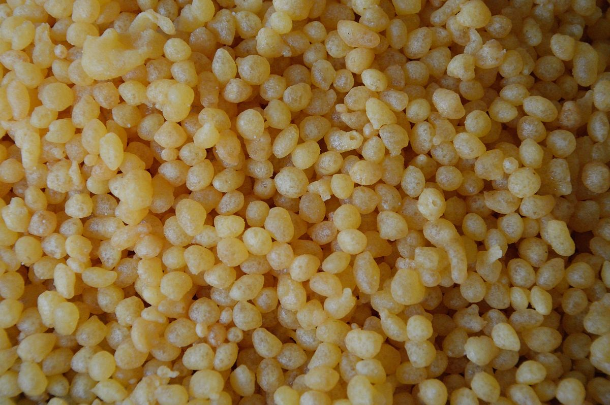

×

Bangladesh
____
Традиционная еда
Амрити — сладкое из Индии и Бангладеш. Место происхождения сладкого - Индия. Он готовится путем обжаривания во фритюре теста из муки винья-мунго в форме круглого цветка, а затем замачивания в сахарном сиропе. Альтернативные имена включают Амитти, Амрити, Эмарти, Омритти, Джахангир и Джангири / Джангири.
Бундия — это индийский десерт из подслащенной жареной муки нута. Поскольку он очень сладкий, его можно хранить около недели. В связи с необходимостью сохранения продуктов в засушливых районах Раджастхана, boondi Laddu ( «Nukti JA Laddu » в Тхарпаркаре ) являются предпочтительными.

Чанар Годжа — сладкое блюдо из Одиши, Индия. В отличие от некоторых других популярных chhena - На Одиа десерты, такие как rasagola, которые распространились по всей Индии, chhena Gaja остается в значительной степени популярны внутри самого государства.
Чена джалеби — сладкое блюдо родом из прибрежной Одиши в восточной Индии, штата, известного десертами из чхены. Его популярность распространилась за пределы прибрежной Одиши, Западной Бенгалии и других восточных регионов Индийского субконтинента.
Чханамухи — является бангладешского сладким. Он возник в районе Брахманбария. Готовится из жареного творога и сахарного сиропа.
Чомчом — является традиционным Бенгальским сладким, популярным во всем Индийском субконтиненте. Конфеты бывают разных цветов, в основном светло-розовые, светло-желтые и белые. Его покрывают кокосовой стружкой или хлопьями мава в качестве гарнира.
Гулаб джамун — это сладкое на основе твердого молока сладкое с индийского субконтинента и разновидность митхаи, популярного в Индии, Непале, Пакистане, на Мальдивах (где оно известно как гулаабуджаану) и Бангладеш (где он известен как джем голап), а также в Мьянме.

____